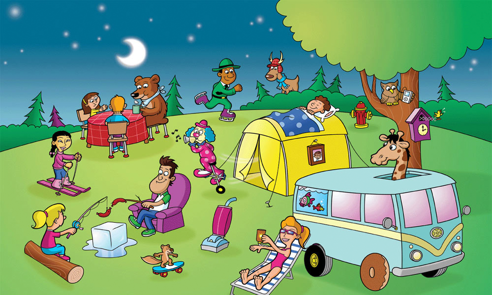
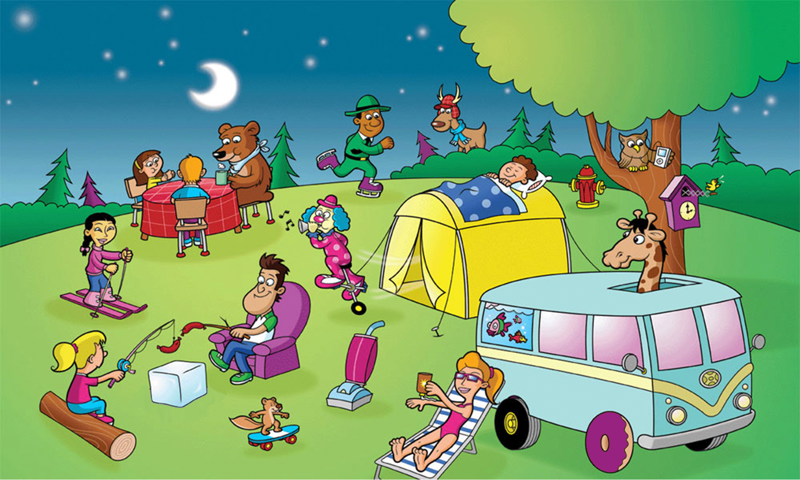
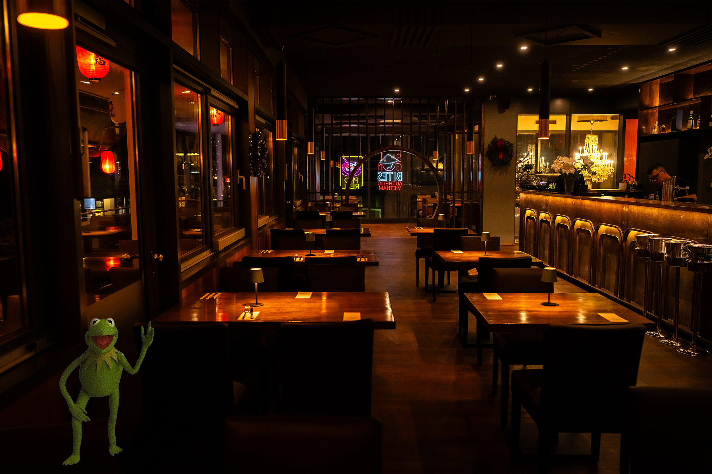
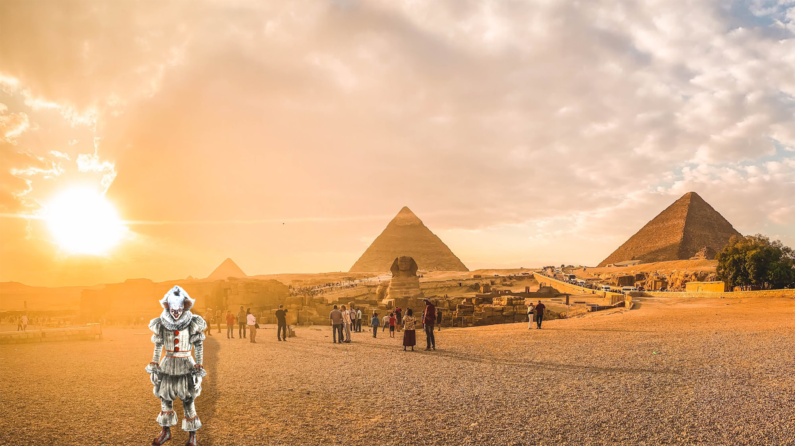
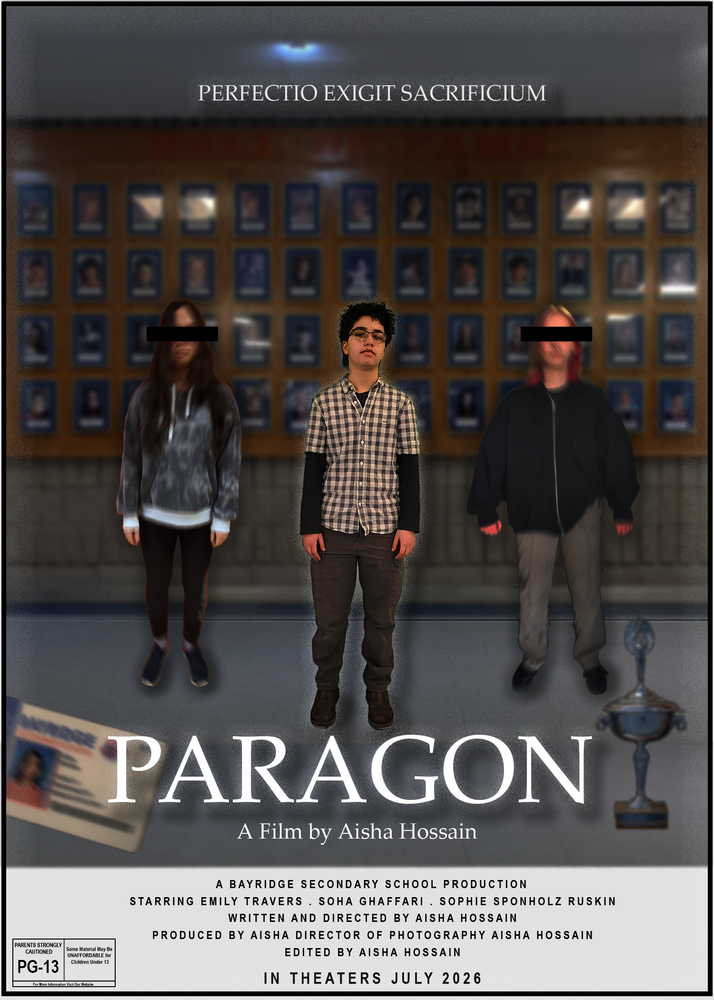

Aisha's Photoshop Gallery
Daily Projects
Activity 1: Laptop Sticker Art
This is my laptop sticker art which was the first assignment for the PS unit.

Activity 2: Spot The Differences
This is my spot the differences work. Can you find 5 differences in the following images?


Activity 3: Light/Dark Blending
Practice putting light images into dark backgrounds and vice versa.


Activity 4: Shadow Assignment
Learning how to create realistic shadows for elements.
Summative 1: BMU Movie Poster
Create our own movie posters for a fictional movie

Summative 2: T-Shirt Designs
Create our own t-shirt graphic designs